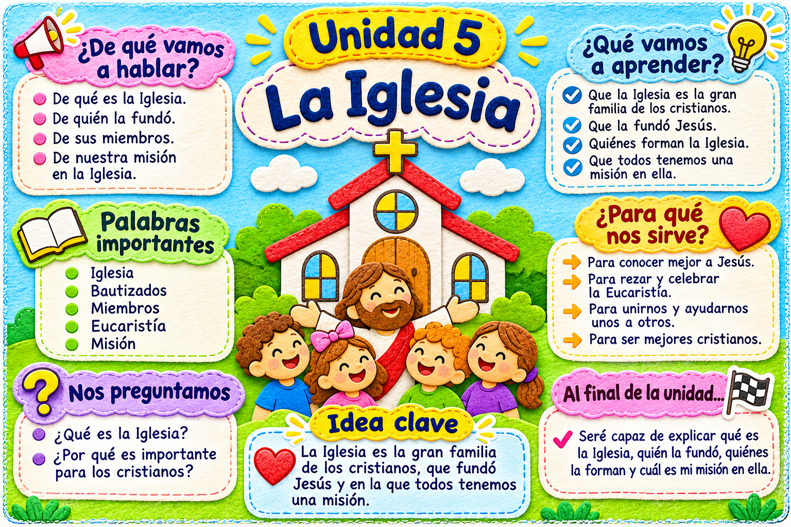

Todos los contenidos y actividades están reunidos en este PDF.
Abrir PDF de la unidad →⭐ RETO DE LA UNIDAD
La Iglesia somos todos los amigos de Jesús. Hoy ayuda a alguien, comparte una sonrisa o invita a jugar a quien esté solo. 💛 Mi misión: ¡construir una Iglesia llena de amor!